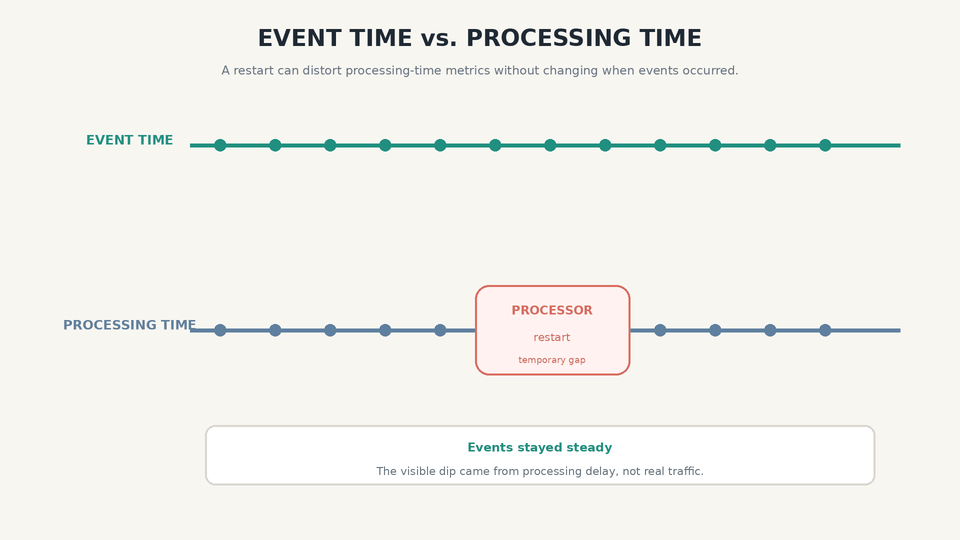
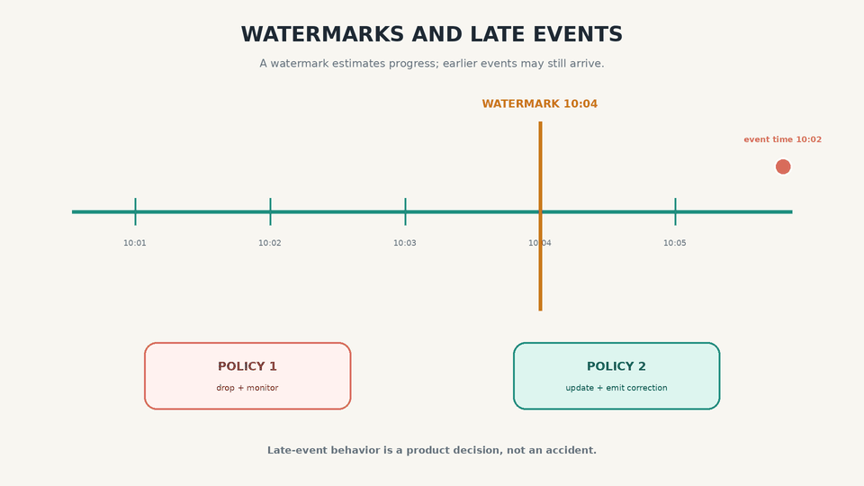
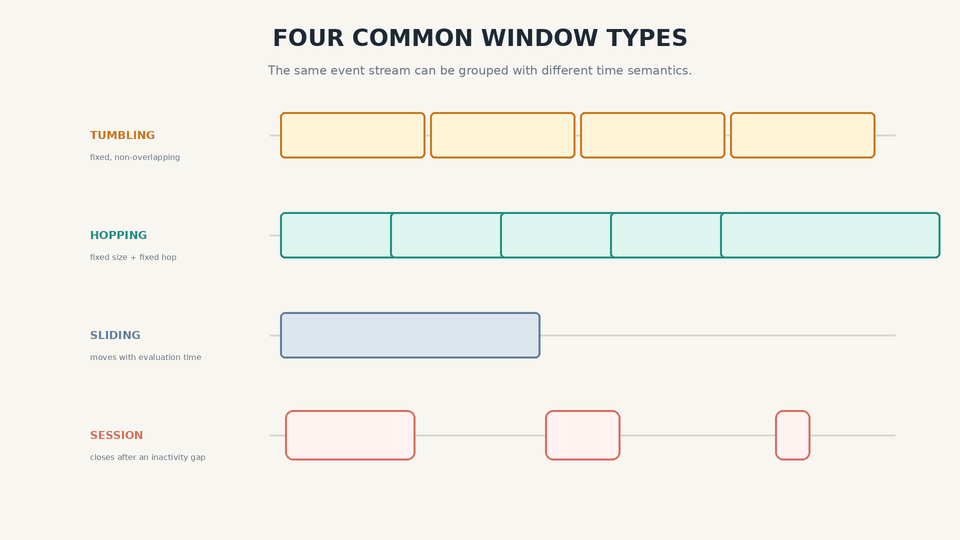

What the Stream? Phase 08
Time, Watermarks, and Windows in Stream Processing
Reasoning About Time
Analytical stream processors work extensively with time windows, but a window is not as straightforward as it first appears.
Modern stream processors commonly support several time domains:
- Event time: when the event occurred according to a timestamp carried by the event.
- Ingestion time: when the streaming system first received the event.
- Processing time: when an operator processed the event according to its local clock.
The important choice is the time domain, not the display time zone of the machine running a subsystem.
Event Time Versus Processing Time
Reprocessing, bug recovery, network failures, and consumer restarts can all delay processing. If we use processing time for a metric, operational delay can look like a real change in user behavior.
Imagine a processor measuring requests per minute. Requests continue to arrive at a steady rate, but the processor restarts. A processing-time chart may show a dip while the processor was unavailable and then a burst when it catches up. The event-time chart can place those requests back into the minutes in which they actually occurred.

Ordering is a separate concern. If request B depends on request A, a causal identifier, sequence number, or per-key ordering mechanism is needed. A timestamp alone does not guarantee causal delivery.
Knowing When a Window Is Ready
For an event-time window, the question is whether event-time progress is far enough that a result can be emitted while still defining what happens when earlier events arrive later.
Events that arrive after the relevant window has produced a result are usually called late events. We need an explicit policy:
- Drop the late event and monitor the rate of dropped data.
- Update the previous result and publish a correction.
- Delay the initial result with a watermark strategy that allows configured out-of-orderness or a grace period. Allowed lateness typically keeps window state available for later corrections.
A watermark estimates that event time has advanced past a timestamp. Events earlier than the watermark are late, but they may still arrive. A watermark is progress information, not a promise that the past is complete.

Whose Clock Are We Using?
Timestamping becomes harder when events are buffered at several points. A mobile application may record events regularly while offline and upload them later.
The device clock describes the user-facing event time, but it may be incorrect. The server clock is trustworthy for receipt time, but it does not describe when the offline action occurred.
It can help to record three timestamps:
- Device event time: when the device says the event occurred.
- Device send time: when the device attempted to send it.
- Server receipt time: when the server received it.
These timestamps can estimate clock offset and transport delay, but they cannot reveal one perfectly “true” occurrence time when both device-clock error and network delay are unknown.
Types of Windows
Tumbling windows have a fixed size and do not overlap. Events are usually assigned to half-open boundaries such as [10:03:00, 10:04:00).
Hopping windows have a fixed size and a fixed hop. They overlap when the hop is smaller than the size.
Sliding windows cover a fixed interval relative to each evaluation point or event and advance continuously or at a configured slide.
Session windows group events for the same key and close after that key has been inactive for a configured gap.

Time semantics are part of the product definition. A correct computation begins by deciding which clock, which window, and which late-data policy represent the business question.